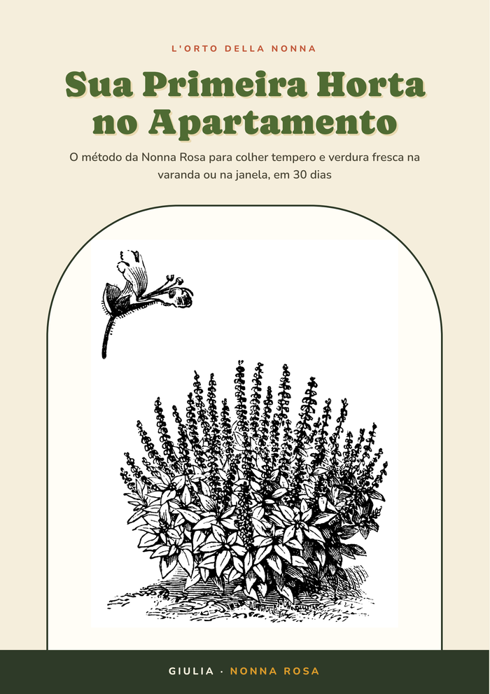
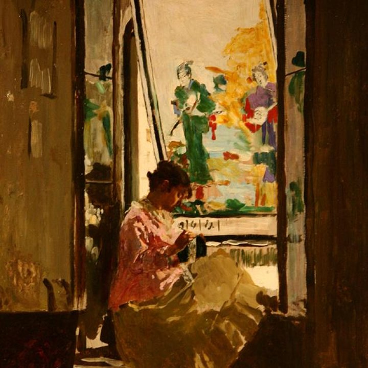
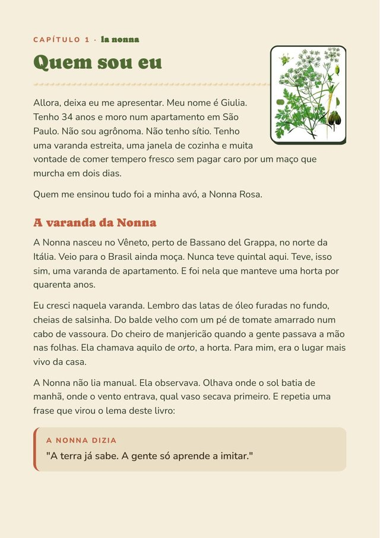
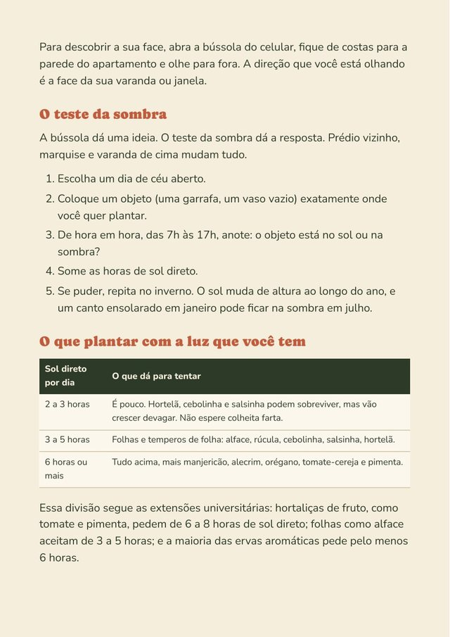
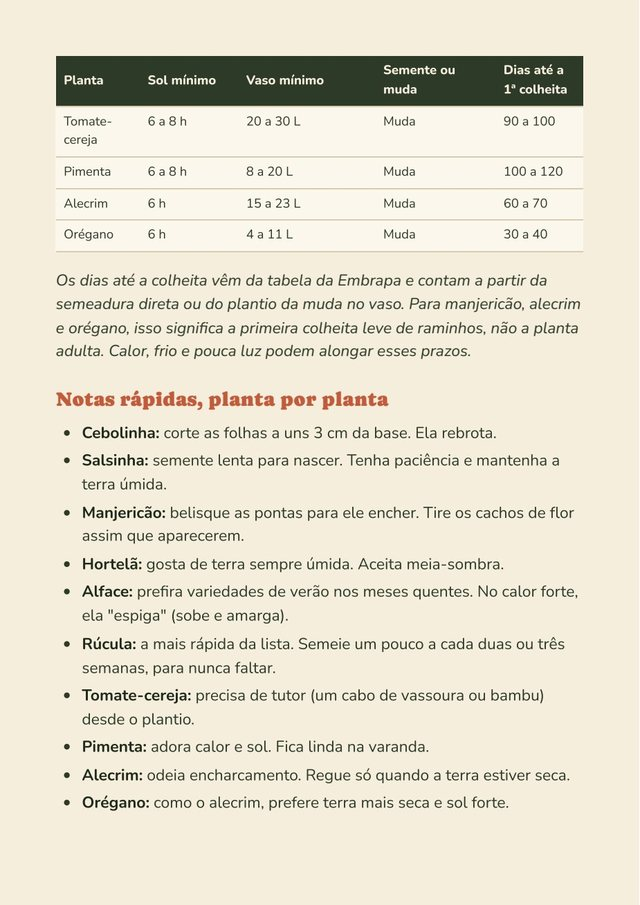
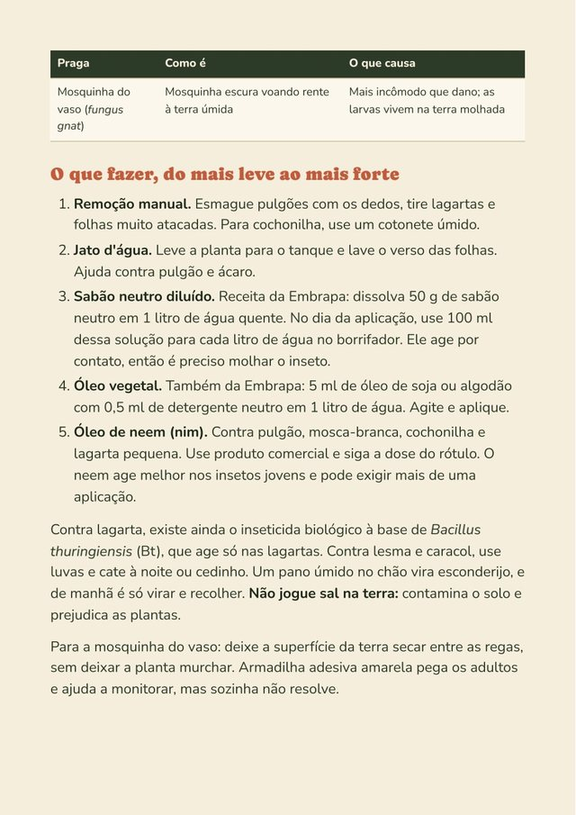
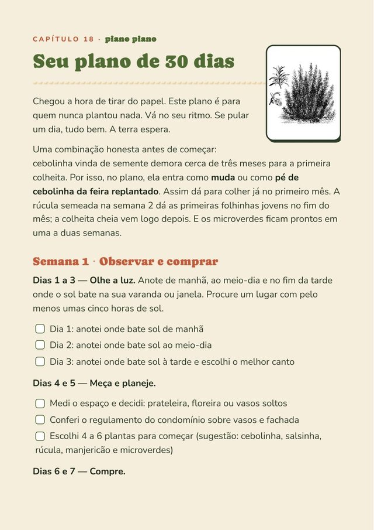
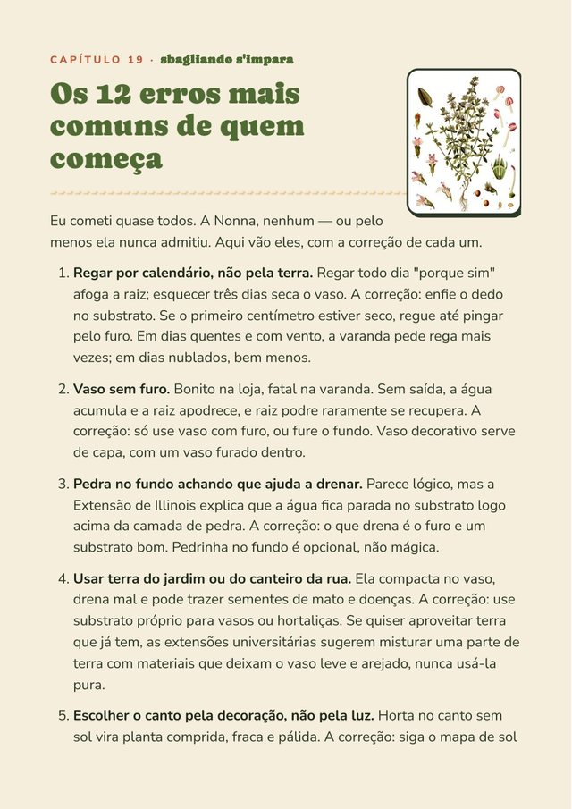
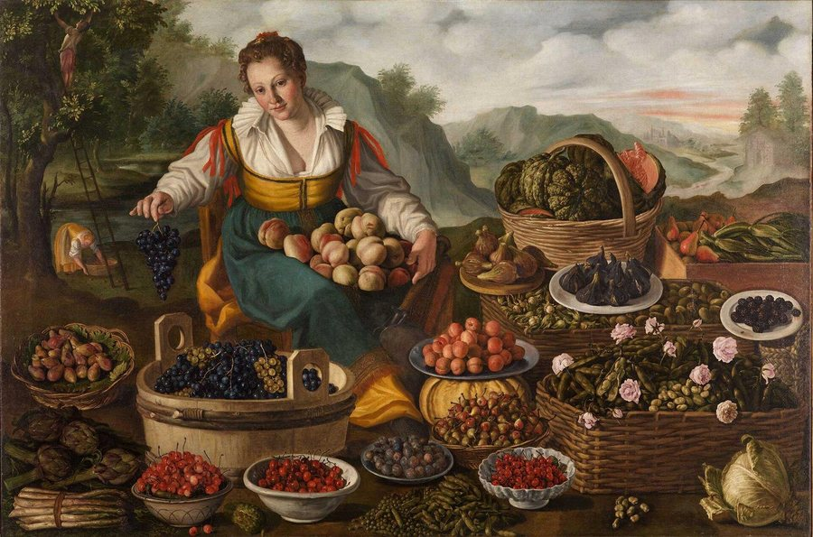

O jeito simples e italiano de colher tempero e verdura fresca na varanda ou na janela, mesmo com pouco sol e pouco espaço. Explicado com calma, do primeiro vaso à primeira colheita.
Quero o e-book

Ciao. Eu sou a Giulia, tenho 34 anos e moro num apartamento em São Paulo. Sou neta da Nonna Rosa, que nasceu no Vêneto, no norte da Itália, e veio para o Brasil ainda jovem.
Durante 40 anos, a Nonna manteve uma horta inteira numa varanda de apartamento: caixotes de feira, latas de tomate pelado, garrafas cortadas. Manjericão, salsinha, alface, tomate-cereja. Nunca faltou tempero na casa dela.
Quando me mudei para o meu primeiro apartamento, matei três vasos de manjericão em dois meses. Liguei pra ela, e ela me disse a frase que mudou tudo:
Este livro junta o que ela me ensinou com o que eu conferi, uma por uma, em fontes como a Embrapa, para você acertar de primeira.
Três partes, na ordem certa: primeiro o que todo iniciante precisa saber, depois a rotina que mantém a horta viva o ano inteiro e, por fim, os segredos que a Nonna levou 40 anos para aprender.
E ainda: plano de 30 dias com checklist, os 12 erros mais comuns de quem começa, lista de compras, diário da horta para preencher e glossário.

Quem sou eu
Ler a luz do apartamento
As 10 primeiras plantas
Pragas comuns
Plano de 30 dias
Os 12 erros
Logo depois da confirmação do pagamento, você recebe no seu e-mail o acesso para baixar o PDF. No Pix e no cartão, a liberação é imediata.
Foi escrito exatamente pra você. Começa do zero: como olhar o sol da sua janela, qual vaso comprar, qual terra usar e quais plantas são mais fáceis para a primeira vez.
Tem um capítulo inteiro sobre isso. Com 3 a 4 horas de sol direto já dá para cultivar várias ervas e folhas, e o livro mostra quais escolher em cada situação.
Sim. O PDF foi diagramado em formato de livro de bolso (A5), confortável de ler no celular, no tablet ou impresso.
76 páginas ilustradas com gravuras botânicas antigas, 20 capítulos, tabelas, checklists e o plano de 30 dias.
Você tem 7 dias de garantia. Se não gostar, pede o reembolso pela própria Kiwify e recebe 100% do valor de volta, sem perguntas.
76 páginas ilustradas, 20 capítulos e os ensinamentos de uma nonna italiana que fez horta em varanda de apartamento por 40 anos.